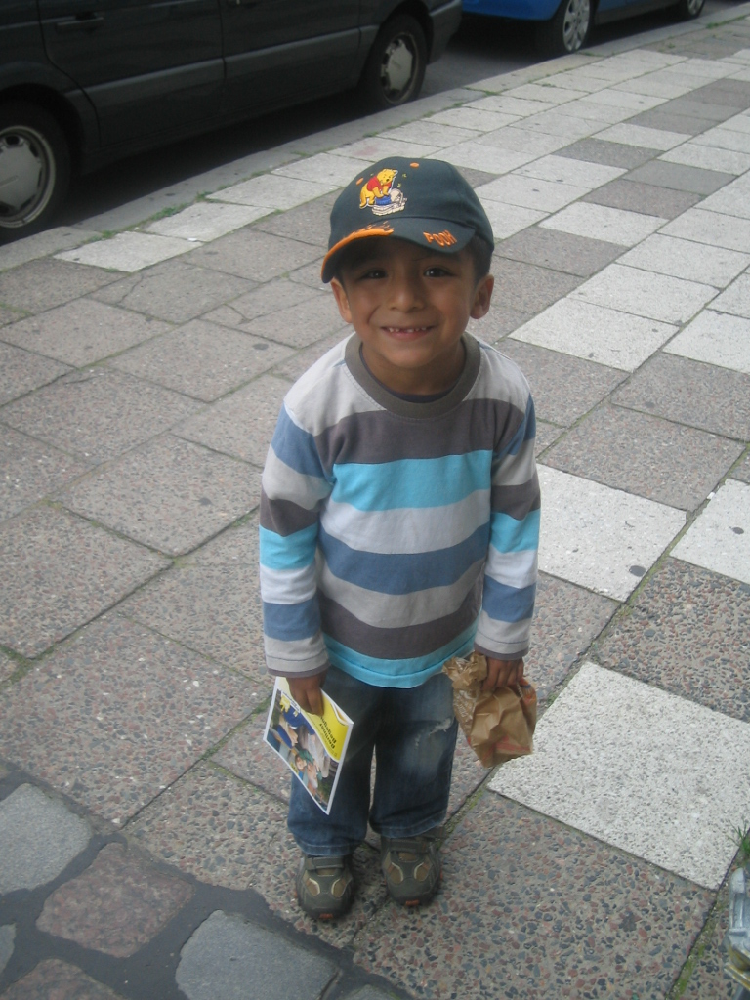
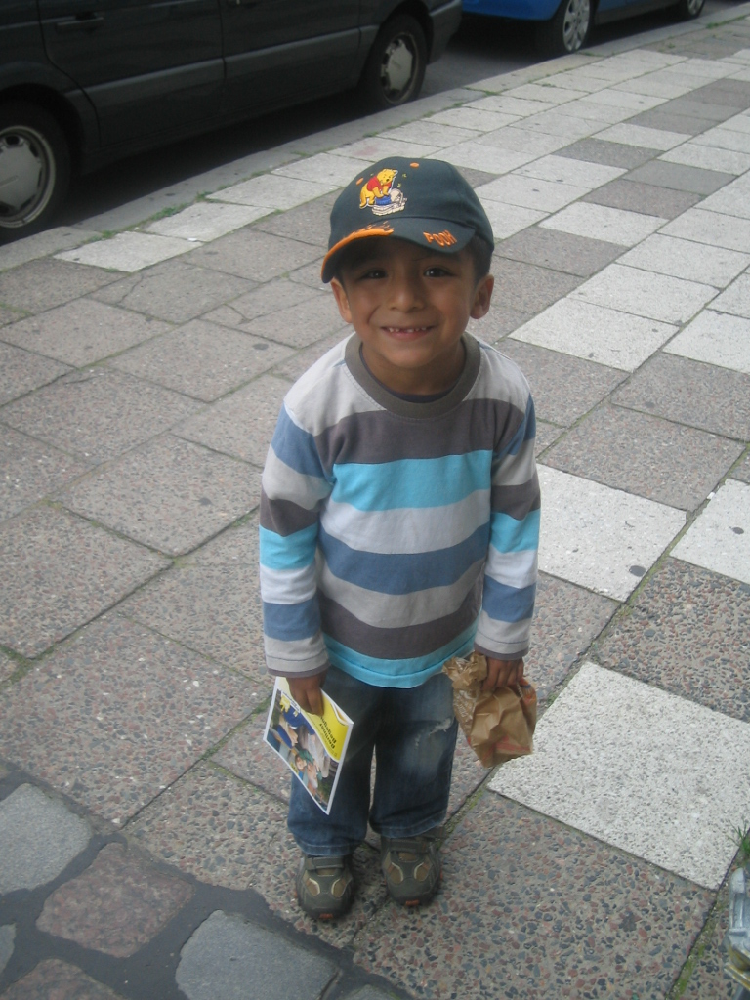

Mi nombre es Jose Miguel Valeriano Machaca, me llaman Migue o Micky, naci un 20 de diciembre del 2004,
vivo
en
La Paz-Bolivia,
actualmente estudiando la carrera de Diseño Digital en la Universidad Catolica Boliviana, vivi en
Alemania
desde mi primer año hasta los 8 años. Mi sueño frustrado es ser Streamer, pero lo que actualmente
quiero ahora es dedicarme a mi carrera y jugar Voley todo el tiempo que pueda.Uno de mis defectos es
ser bastante timido, pero cuando agarro confianza con las personas soy bastante extrovertido y
molestoso.

 
